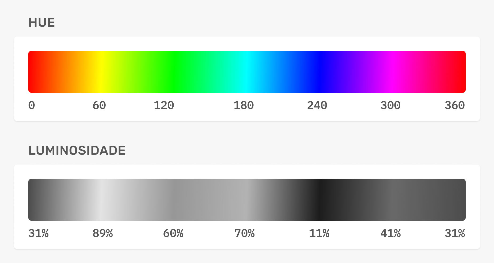
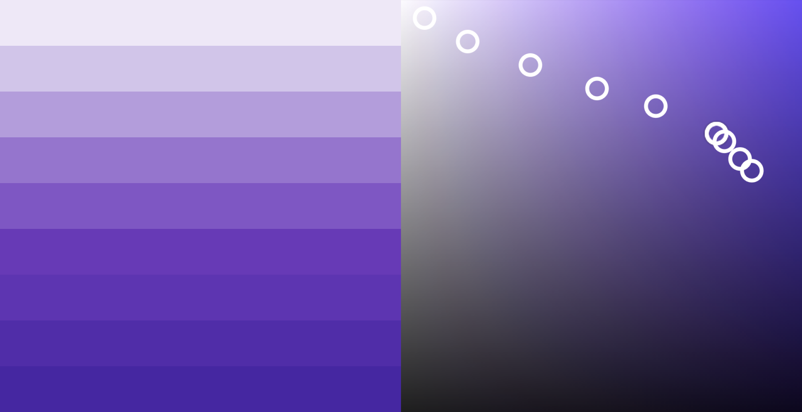
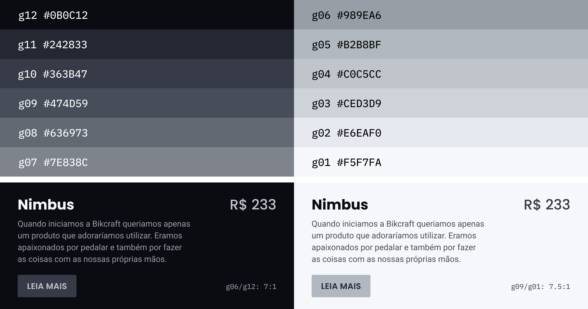

Cor e contraste
Variação, cinza e texto sobre imagem.
Variações da Cor
Na natureza dificilmente encontramos uma cor pura, geralmente a cor é seguida por diversas variações da mesma. Para toda cor que decidirmos utilizar no projeto, ter variações será essencial para compormos a interface.
Natural
Em uma variação natural, geralmente a saturação aumenta, enquanto o brilho diminui e mudanças são feitas na matiz para ajustar a luminosidade.
Artificial
As cores possuem luminosidades diferentes, por isso o amarelo é percebido mais claro, independente dos seus valores de saturação e brilho.

Luminosidade
A variação da cor geralmente ocorre na diagonal da matriz HSB.

Saturação Baixa
Cores com saturação baixa (tons de cinza) são as cores mais utilizadas nas interfaces. Elas irão compor a base de fundos, títulos, corpo de texto e mais. A saturação apenas aumenta quando diminuímos o brilho.
Tons de Cinza
Interfaces de aplicativos como Facebook, YouTube, Instagram, Nubank, Tinder, Netflix e outros geralmente utilizam tons de cinza (neutro ou frio) como a cor de base.
Tons de Cinza
Cerca de 12 variações são suficientes para te dar bastante flexibilidade na criação de interfaces. Garanta que os valores selecionados funcionem em conjunto (contraste seguindo as diretrizes WCAG).

Texto e Imagem
O texto deve ser legível. Para isso geralmente utilizamos textos em branco em cima de imagens escuras ou textos pretos em cima de imagens claras.